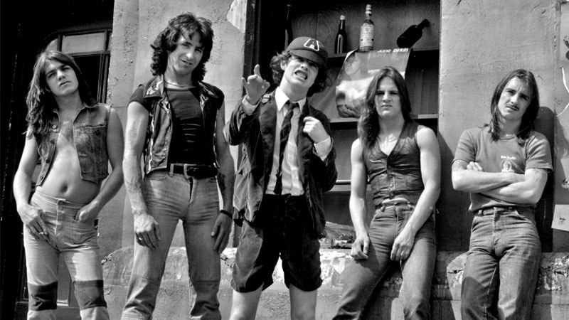
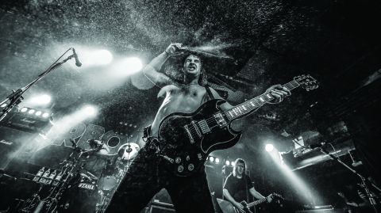

Hevi metal (engl. Heavy metal) ili samo metal, je žanr rok muzike. Odlikuje se agresivnim i žestokim ritmom i veoma pojačanim i distorziranim zvukom gitara, najčešće sa pretencioznim tekstovima i virtuoznom sviračkom tehnikom. Hevi metal je nastao pod uticajem hard roka, ali je manje komercijalan, agresivniji i često sa bržim ritmovima. U hevi metalu se mogu osetiti i uticaji bluza, progresivnog roka i mnogih drugih stilova. Hevi metal grupe su sastavljene skoro isključivo od gitarista, basista i bubnjara. Vrhunac popularnosti beleži 80-ih godina prošlog veka.
Osnovna obeležja hevi metala su dominacija gitara i izražen ritam. Međutim, u svakom od podžanrova hevi metala jedna ili više navedenih karakteristika izostaje, pa se ti podžanrovi u manjoj ili većoj meri razlikuju od originalnog hevi metala.
Hard Rock


Hard rok (engl. Hard rock) je vrsta rok muzike koja svoje najranije korene vuče iz garažnog i psihodeličnog roka iz polovine 1960-ih. Ova vrsta muzike najviše je bila popularna tokom 1970-ih, 1980-ih i 1990-ih. Odlikuje se upotrebom distorzije električnih gitara, bas-gitara, klavijatura i bubnjeva. Hard rok je dalje uticao na razvoj hevi metal muzike.